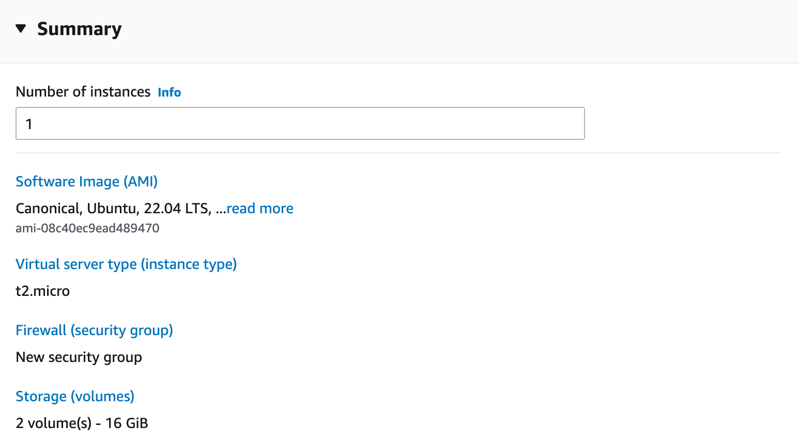

6 Getting Started with the Cloud
Like so many tech buzzwords, it’s pretty hard to get a sense for what the cloud actually is beneath all the hype.
The Cloud is a description for servers you rent instead of buy.
Back in the day – and still in some heavily-regulated industries – getting a new server involved buying a physical piece of hardware, installing it in a server room, getting it configured and up and running, installing the software you want on the server, and configuring access to the server.
The Cloud provides layers of “as a service” on top of this former world where someone at your organization would be responsible for buying and maintaining actual hardware.
In this chapter, you’ll learn a little bit about how The Cloud works, and how to demystify cloud offerings.
6.1 The Rise of Services
Like much of the rest of the economy, server provisioning and use has gone the way of services. Instead of buying, owning, and maintaining a physical object, a huge proportion of the world’s server hardware is rented.
[TODO: quote in paragraph below: https://www.srgresearch.com/articles/cloud-market-growth-rate-nudges-amazon-and-microsoft-solidify-leadership]
In the US, a huge fraction runs on servers rented from one of three organizations (in order of how significant they are) – Amazon Web Services (AWS), Microsoft Azure, and Google Cloud Platform (GCP). These three companies account for a huge proportion of what we think of as “The Cloud”. There are other smaller players, and also companies that are popular for particular tasks, like Netlify for hosting static websites.
However, in many cases, the cloud doesn’t just refer to renting a server itself. There are also layers and layers of services on top of the “rent me a server” business.
In general, the “rent me a server” model is called Infrastructure as a Service (IaaS - pronounced eye-az). So when you stood up an EC2 instance from AWS in the first chapter, you were using AWS’s IaaS offering.
In general, people split the layers on top of IaaS into two categories – Platform as a Service (PaaS – pronounced pass), and Software as a Service (SaaS pronounced sass).
PaaS is where you rent an environment in which to do development. On the other hand, SaaS is renting software as an end user.
One common way to explain the difference is using a baking metaphor. Consider making a cake. An on-prem install would be where you make the cake completely from scratch. A IaaS experience would be buying cake mix and baking at home. PaaS would be buying a premade blank cake that you decorate yourself, and SaaS would be just buying a store-bought cake.
I find these categories and this metaphor sorta helpful in the abstract, but when getting down to concrete real-world examples, the distinctions get fuzzier, and you have to be careful which perspective you’re talking about.
For example, RStudio Cloud is a service where you can get an environment with RStudio preconfigured and ready to use. From the perspective of a data scientist, this is clearly a PaaS offering. RStudio is providing a platform where you can learn or do work as a data scientist.
But from the perspective of an IT/Admin considering how to set up a server-based data science environment inside their company, RStudio Cloud is clearly a SaaS offering – you just getting the software configured and ready to use.
Making the issue even more difficult, many companies go out of their way to make their services sound grand and important and don’t just say, “this is ___ as a service”. Moreover, it’s very common (especially in AWS) to have many different services that fulfill similar needs, and it can be really hard to concretely tell the difference.
For example, if you go to AWS’s database offerings for a “database as a service”, your options include Redshift, RDS, Aurora, DynamoDB, ElastiCache, MemoryDB for Redis, DocumentDB, Keyspaces, Neptune, Timestream, and more.
There’s a reason why there’s a meaningful industry of people whose full time job is to consult on which AWS service your company needs and how to take advantage of the pricing rules to make sure you get a good deal.
There are a few reasons why organizations are moving to the cloud. Primary among them is that maintaining physical servers is often not the core competency of IT/Admin organizations. They’d rather manage higher-level abstractions than physical servers – or increasingly even virtual servers.
One reason that people cite, but very rarely comes to pass, is cost. In theory, the flexibility of the cloud should allow organizations to stand up servers as needed and spin them down when they’re not needed. This flexibility is real, there are times when it’s super useful to be able to bring up a server for a particular project – it’s often far quicker and easier than buying and installing a server of your own.
In reality, the engineering needed to stand up and spin down these servers at the right time is really difficult and costly – enough so that most organizations could probably substantailly save money if they repatriated their cloud workloads.
For more established organizations, running workloads in the cloud may, in fact, be substantially more costly than just bringing those workloads on prem.
6.2 Serverless Computing
In the past few years, there has been a rise in interest in “serverless” computing. This is a buzzword and there’s no one shared definition of what serverless means. It’s worth making clear that there is no such thing as truly serverless computing. Every bit of cloud computation runs on a server - the question is whether you have to deal with the server or if someone else is doing it for you.
However, there are two distinct things happening that can meaningfully be described as serverless…but they’re completely different.
One is the rise of containerization. In Chapter 5, we got deep into the weeds on using docker yourself. Docker is a very cool tool that makes software much more portable, because you can bring the environment – all the way down to the operating system – around with you very easily. This is kinda a superpower, and many organizations are moving towards using docker containers as the atomic units of their IT infrastructure, so the IT organization doesn’t manage any servers directly, and instead just manages docker containers.
In some sense, this is meaningfully serverless. You’ve moved the level of abstraction up a layer from servers and virtual machines to docker containers. And managing docker containers is often meaningfully easier than managing virtual machines directly. However, you still face a lot of the same problems like versioning operating systems, dealing with storage and networking yourself, and more.
There is another, stronger, use of serverless that is rising and is also pretty cool, but is super different. In these services, you just hand off a function, written in soem programming langauge to a cloud provider, and they run that function as a service. In a trivial example, imagine a service that adds two numbers together. You could write a Python or R function that does this addition and returns it.
It is possible to just deploy this function to a Cloud provider’s environment and then only pay for the actual compute time needed to complete your function calls. This is obviously very appealing because you really don’t have to manage anything at the server level. The disadvantage is that this works only for certain types of operations.
6.3 Common Services That will be helpful to know offhand
Luckily, if you’re thinking about setting up and running a standard data science platform in one of the major cloud providers, you’re likely to use one of a few reasonably standard tools.
It’s helpful to keep in mind that at the very bottom, there are four basic cloud services: renting servers, configuring networking, identity management, and renting storage. All the other services are recombinations and software installed on top of that.1
Azure and GCP tend to name their offerings pretty literally. AWS, on the other hand, uses names that have little relationship to the actual task at hand, and you’ll just need to learn them.
6.3.1 IaaS
Compute - AWS EC2, Azure VMs, Google Compute Engine
Storage
- file - EBS, Azure managed disk, Google Persistent Disk
- Network drives - EFS, Azure Files, Google Filestore
- block/blob - S3, Azure Blob Storage, Google Cloud Storage
Networking:
- Private Clouds: VPC, Virtual Network, Google Virtual Private Cloud
- DNS - Route53, Azure DNS + Traffic Manager, Google Cloud DNS
Lambda
6.3.2 Not IaaS
- Container Hosting - ECS, Azure Container Instances + Container Registry
- K8S cluster as a service - EKS, AKS, GKE
- Run a function as a service - Lambda, Azure Functions, Google Cloud Functions
- Database - RDS/Redshift, Azure Database, Google Cloud SQL
- SageMaker - ML platform as a service, Azure ML, Google Notebooks
https://docs.microsoft.com/en-us/azure/architecture/aws-professional/services#networking https://cloud.google.com/free/docs/aws-azure-gcp-service-comparison
6.4 Cloud Tooling
- Identity MGMT - IAM, Azure AD
- Billing Mgmt
IaaC tooling
6.5 Lab
6.5.1 Login to the AWS Console
We’re going to be standing up a server on Amazon Web Services (AWS). If you feel comfortable, feel free to do this in any cloud provider. All cloud providers have their own equivalents of all the things we’re about to do in AWS.
We will be standing up a server in AWS’s free tier – so there will be no cost involved as long as you haven’t used up all your AWS free tier credits before now.
We’re going to start by logging into AWS. If you’ve done this before, just go ahead and log in.
If not, go to https://aws.amazon.com and click Sign In to the Console .
If you’ve never set up an AWS account before, click Create a New AWS account and follow the instructions to create an account. Note that even if you’ve got an Amazon account for ordering stuff online and watching movies, an AWS account is separate.
Once you’ve logged in, you’ll be confronted by the AWS console. There are a ton of things here, and it’s rather overwhelming.
6.5.2 Stand up an instance
AWS’s “rent a server” is called EC2.2 It is the most basic AWS service, and it’s what we’re going to use to get started.
I’m going to walk you through setting up an instance from the AWS console. The exact buttons and text may change by the time you read this, but the general overview will be the same.
There are five things we have to configure before launching the server. I’m not going to walk you through configuring each one on this page, because Amazon is constantly updating the exact layout of the page and the text, but I’ll explain the choices and then you can make them yourself – or even make similar choices if you’re in GCP or Azure.
The first choice is instance name and tags. None of this is required – it’s for convenience and organization. I’d suggest you name the server something like do4ds-lab.
Next, you’ll have to choose the image. An image is what will be on your server when you start it. Images can range from just a bare operating system to a suspended version of an operating server. AWS makes a variety of images available for free, but there are also images that require extra payments on top of the server costs. We’re not going to use one of those.
All clouds have a concept of server images. In AWS, they’re called AMIs (pronounced like you’re reading the letters individually, short for Amazon Machine Image).
Since we’re going to work on configuring the server from the ground up, we’re going to choose an AMI that’s just the operating system. Choose the most basic Ubuntu one. Double check that it’s free tier eligible.
At the time of this writing, that’s using Ubuntu 22.04. Some details of commands may change if the version of Ubuntu is different, but the general outline will be the same.
You’ll have to choose an Instance Type. This is the category of server you’re going to use. There are different families of servers you can get. Within each family, instance types scale by size in terms of number of CPUs and amount of memory.
As of this writing, the largest server that is free tier eligible is a t2.micro with 1 CPU and 1 Gb of memory. That is a very small server.
If all you’re doing is walking through the lab, it should be sufficient, but if you actually want to do any data science work, you’ll need a substantially larger server.
It is possible to rack up really large AWS bills, so be careful. That said, a modestly-sized server is still pretty cheap if you’re only putting it up for a short amount of time. As of this writing, a t3.2xlarge with 8 CPUs and 32Gb of memory is $0.33 an hour. So a full year running full time for an instance is nearly $3,000, but if you’re only running that instance for a little while – say the few hours it’ll take you to complete this lab, it will probably only be a few dollars.
For thoughts on server sizing and choosing, see Chapter 10.
Next, you’ll need to make sure you have a keypair. We’ll get into what this key is and how to use it in Chapter 7. For now, you’ll need to create a keypair if you don’t already have one. I’d suggest naming it do4ds-lab-key because I’ll use that name, so you can just copy/paste commands if you use the same name.
I’d recommend creating a directory for this lab, perhaps something like do4ds-lab and putting your keypair there. If you’re not going to do that, just make sure you keep track of where you downloaded it.
Whether you’re on Windows or Mac, download the pem version of the key.
You shouldn’t need to change any networking settings from the defaults. Make sure it’s configured to allow SSH traffic.
You’ll need to configure storage. By default, the server comes just with root storage. Root storage is where the operating system will be, as well as storing most of the executables you’ll need.
You’ll want another volume where you’ll store the actual work you’re doing – data files, code, and more. You can attach volumes quite easily. In AWS, they’re called EBS (short for Elastic Block Store). While it’s not strictly necessary to configure an extra EBS volume to complete the labs in this book, make sure to add one since it’s necessary if you ever want to stand up an actual environment to do work.
You can feel free to look through the Advanced Details, but you shouldn’t need to adjust any of them.
When you go to the summary, it should look something like this, assuming you followed the instructions here:

Click Launch Instance. AWS is now creating a virtual server just for you.
If you go back to the EC2 page and click on Instances you can see your instance as it comes up. You may need to remove the filter for State: Running since it’ll take a few moments to be Running.
6.5.3 Grab the address of your server
If you click on the actual instance ID in blue, you can see all the details of your server.
The instance ID and public IP addresses were auto-assigned.
Grab the Public IPv4 DNS address, which starts with ec2- and ends with amazonaws.com. Copy it somewhere easy to grab. That’s going to be the way we access the server.
For example, as I write this, my server has the address ec2-54-159-134-39.compute-1.amazonaws.com. In the commands, I’ll include the variable SERVER_ADDRESS. If you’d like to be able to copy commands verbatim, you can set the variable SERVER_ADDRESS to be your server address using SERVER_ADDRESS=ec2-54-159-134-39.compute-1.amazonaws.com.
If you’re used to R, where it’s best practice to put spaces around =, notice that assigning variables in bash requires no spaces around =.
6.5.4 Stopping or burning it down
Whenever you’re stopping for the day, you may want to suspend your server so you’re not paying for it overnight or using up your free tier hours.
You can suspend an instance in the state it’s in so it can be restarted later. Depending on how much data you’re storing, it may not be free, but storage costs are generally very modest.
Whenever you want to suspend your instance, go to the EC2 page for your server. Under the Instance State drop down in the upper right, choose Stop Instance.
After a couple minutes the instance will stop and you won’t get charged for it. Before you come back to the next lab, you’ll need to start the instance back up so it’s ready to go.
If you want to completely delete the instance at any point, you can choose to Terminate Instance from that same Instance State dropdown.
6.6 Comprehension Questions
- What is the difference between PaaS, IaaS, and SaaS? What’s an example of each that you’re familiar with?
- What are the names for AWS’s services for: renting a server, file system storage, blob storage
There are also some really wacky services you can get if you wanted to, like AWS Ground Station, which allows you to rent satellite ground station infrastructure. That’s cool…but I’m not sure why you’re reading this book if you need that.↩︎
It’s short for Elastic Cloud Compute, but everyone just says EC2.↩︎